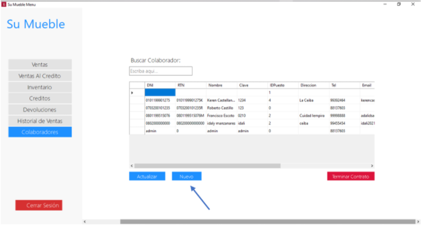
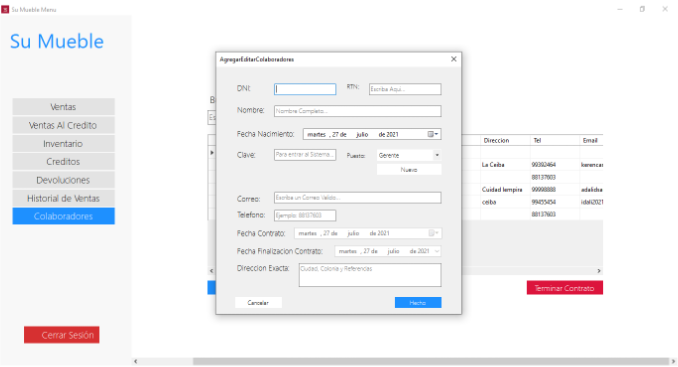
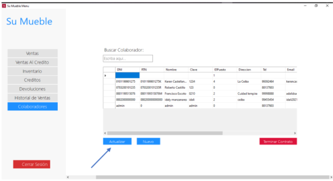
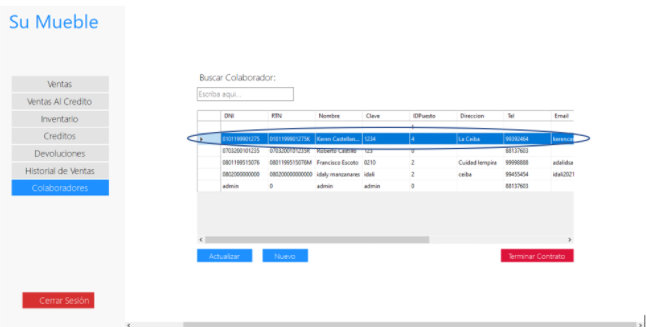
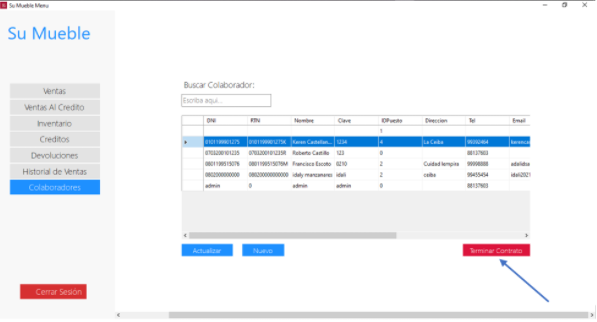

Login
login

Para acceder a la aplicación, el usuario debe hacer uso de sus credenciales de acceso (DNI y contraseña).
• IMPORTANTE:
- En caso el usuario no tenga credenciales de acceso y la entidad ya existiese dada de alta en nuestra base de datos, debe de ponerse en contacto con el usuario administrador de dicha entidad para solicitarle las credenciales.
- Solo el personal autorizado tendrá acceso al sistema.
- ENTRAR: Una vez introducido el usuario y la contraseña, pulsando este botón para Entrar podrá entrar a los módulos del sistema.
Agregar Colaboradores al sistema
- Una vez ingresando al sistema principal nos dirigimos a la opción de “Colaboradores” y presionamos el botón “Nuevo”

- Al seleccionar el botón “Nuevo” nos mostrará la siguiente ventana para ingresar todos los datos del nuevo colaborador. En donde tenemos que llenar los siguientes datos y una vez ingresados todos seleccionamos “Hecho” para guardar todos los cambios.

Actualizar un colaborador
- Nos situamos siempre en la ventana principal y elegimos “Colaboradores” y seleccionamos el botón “Actualizar”

- Una vez seleccionando “Actualizar” nos mostrará la siguiente ventana en donde debemos de llenar los campos especificados para dicha acción siguiendo siempre los lineamientos.”

Desactivar un Colaborador
- Estando situados siempre en la ventana principal de “Colaboradores” seleccionamos el colaborador que deseamos desactivar o eliminar de nuestro sistema:

- Y a continuación solo presionamos el botón de “Terminar Contrato”:
